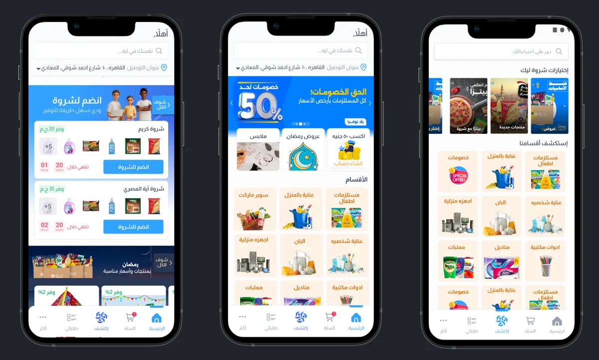
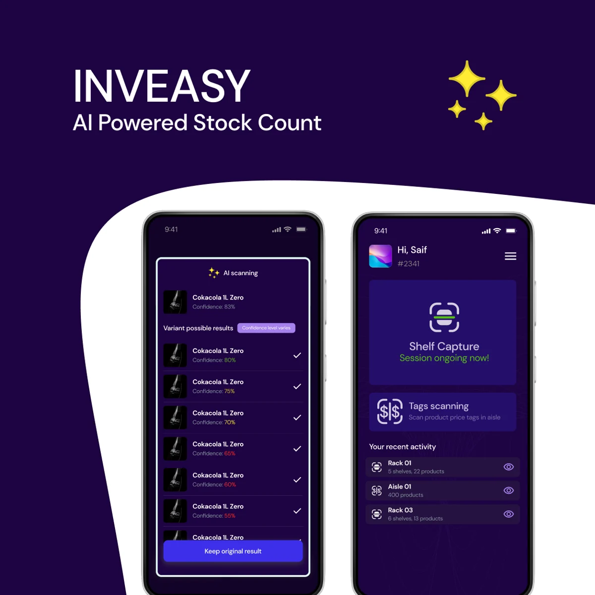
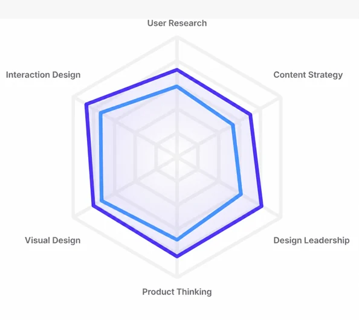
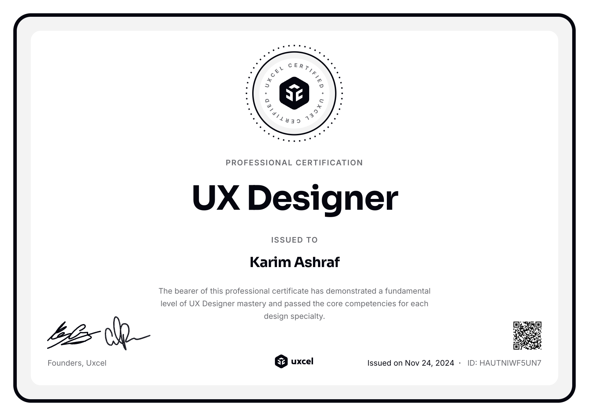
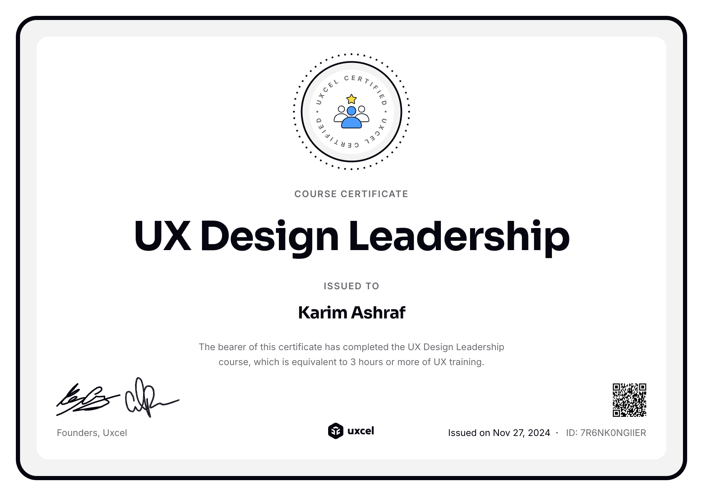
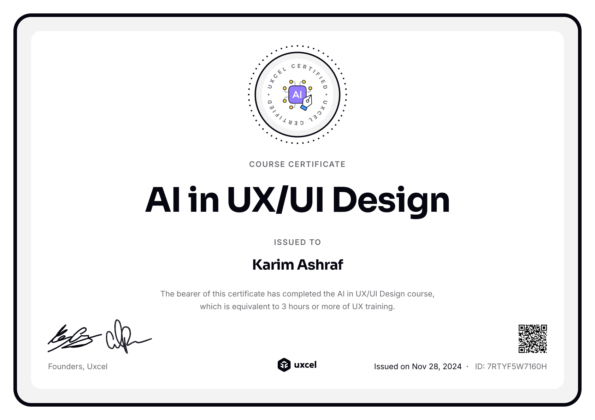
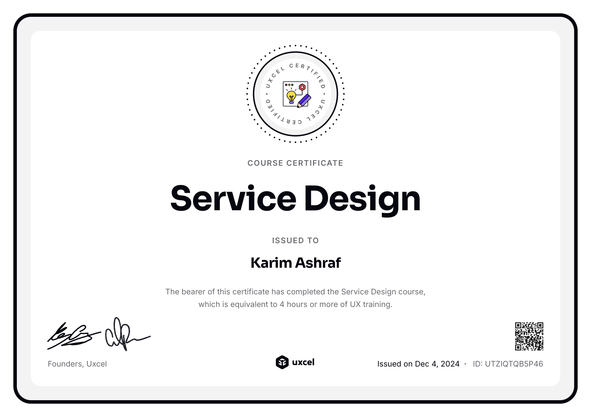
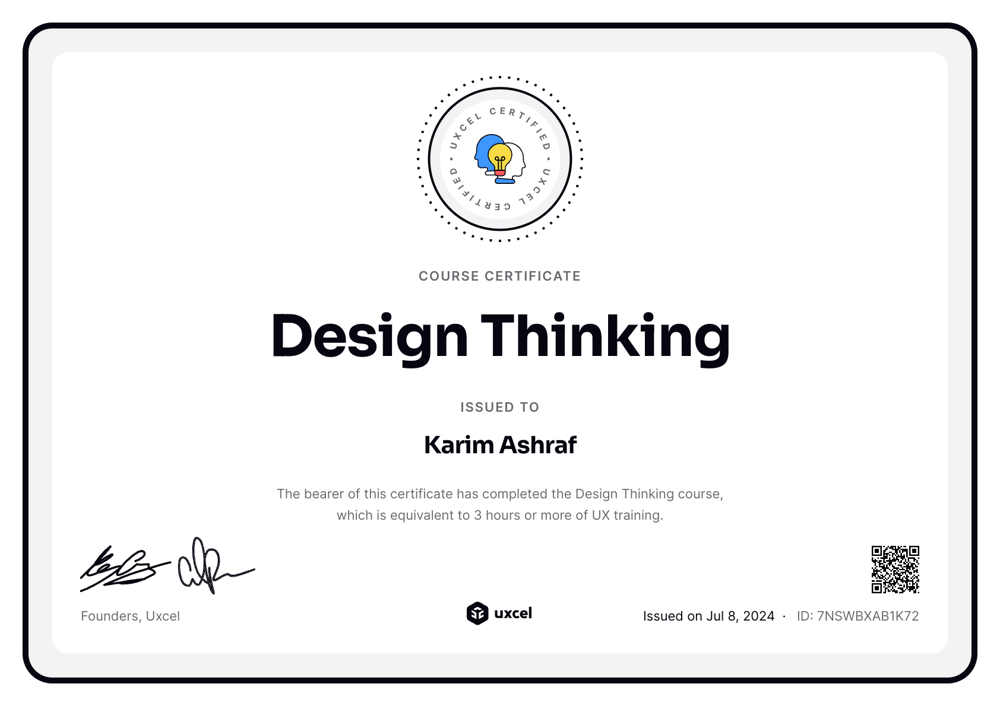
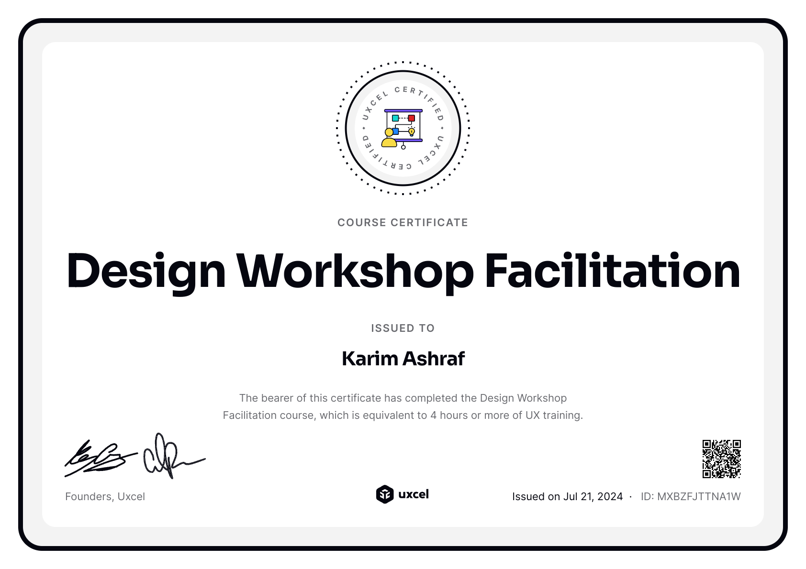

One workforce. Two ways to work.
A configurable HR platform for office teams, and a shared tablet experience built for frontline clock-in.
Two product contexts, one coherent systemPolicies, permissions, feedback and recovery.
Read the case study Product designer / Cairo
I'm Karim Ashraf. I design consumer and B2B products, from the rules behind a journey to the details people see and use.
4+ years in product design. Currently at Money Fellows.
Available for work, with remote and relocation opportunities welcome.
Selected work
A closer look at the problems, decisions and evidence behind five product contexts.
A configurable HR platform for office teams, and a shared tablet experience built for frontline clock-in.

I made the people, timing and steps of a group purchase visible at the moment customers needed them.
I connected goals, recommendations and product rules so customers could understand their progress and what to do next.

Confidence, correction and human review helped turn uncertain model output into product directions people could evaluate.
I shape the product, design its interactions and direct AI-assisted development across games, workshops and city discovery.
For designers & teams
Browse industry patterns, try the review tools, or download worksheets for people and AI agents.
How I work
I connect the customer's task, the product's rules and the experience that actually ships.
Research and product context help me understand what people are trying to do, where they hesitate and which constraints are real.
See Money Fellows →I work through the journey, language and interaction states, including what happens when an action fails or a result is uncertain.
See Bluworks →Prototypes, specifications and implementation review keep the intent connected to the built experience. AI-assisted work goes through the same review.
See Playful →Product design is my primary craft. On selected initiatives, my product management work also covers scope, prioritization and delivery, especially on Playful, which I founded.
Experience
I design Goals, recommendations and onboarding, turning eligibility, limits and verification rules into customer journeys people can understand and act on.
I turned venture concepts into MVP scopes, journeys, prototypes and product direction across AI HR automation, computer vision, grocery assistance and B2B procurement.
I designed configurable workforce operations across payroll, attendance and approvals, plus a distinct shared-tablet experience for frontline clock-in.
I designed Arabic mobile and responsive web journeys that made group buying easier to understand, working with Product, Operations and Marketing on the shared customer experience.
I shape the product direction and design, direct AI-assisted development and review the working experiences across games, workshops, discovery, commerce and profiles.
About me
I came to product design through engineering, which is probably why I enjoy the knotty parts of a product: the rule behind the screen, the edge case that changes the journey, or the AI response that needs a thoughtful fallback. For more than four years, I have worked across consumer and B2B products in regulated services, SaaS, social commerce, growth, and AI-enabled ventures.
I like being close to the whole journey, from the first uncertain question to the details of what ships. A polished Figma file matters, but only if it helps a customer move with confidence and gives the team something honest and buildable.
I keep sharpening the craft through UXcel, using its assessments, courses, and project feedback to challenge how I think about research, interaction, content, product strategy, visual design, and leadership.
When I am away from screens, I am usually making something with my hands, puzzling my way up a bouldering wall, or finding an excuse to be near the sea. Animals win me over immediately, although my two cats already have first claim on my attention and, apparently, most of the house.

Continued practice






Let's connect
I am open to senior product design opportunities and selected product manager roles across industries, especially where complex rules, emerging technology, or operational constraints need to become clear customer experiences.